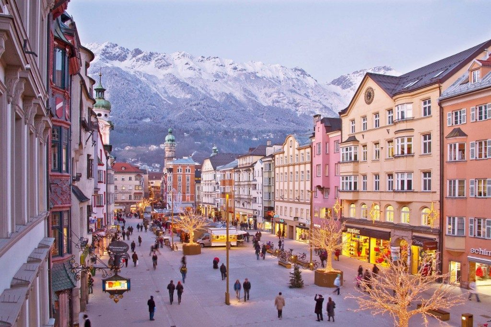

Місце і дата народження: М. Рівне, 11 лютого 2003 р.
Рівненський економіко-правовий ліцей м. Рівне, НТУУ "КПІ" м. Київ
Хоббі:
Улюблені фільми:
Улюблені книги:
Інсбрук – одне з найвідоміших і популярних місць відпочинку в Австрії. Сюди приїжджають для того, щоб побачити мальовничі Альпи, помилуватися Старим містом, а також активно провести зимові канікули. Тут проживає близько 130 000 чоловік, а щорічно приїжджає до мільйона туристів. Площа курорту складає 104,91 км квадратних.
